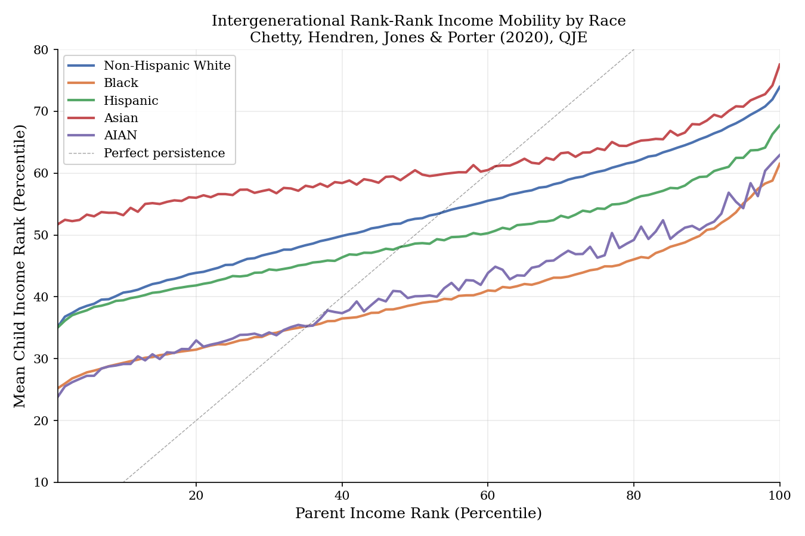
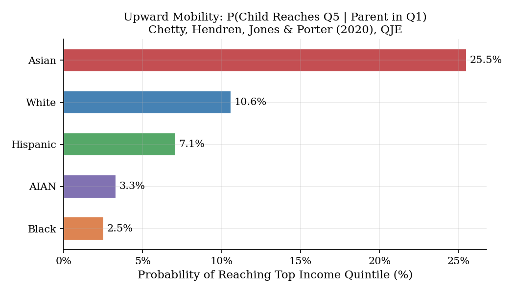
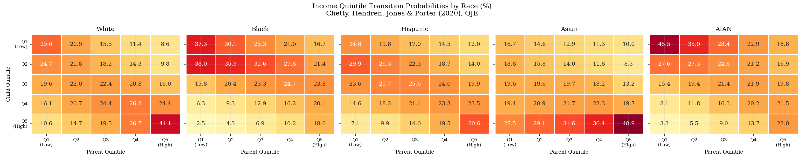
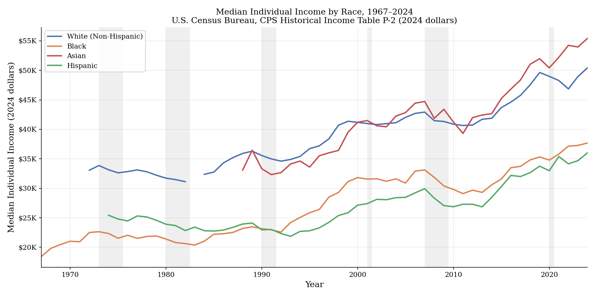
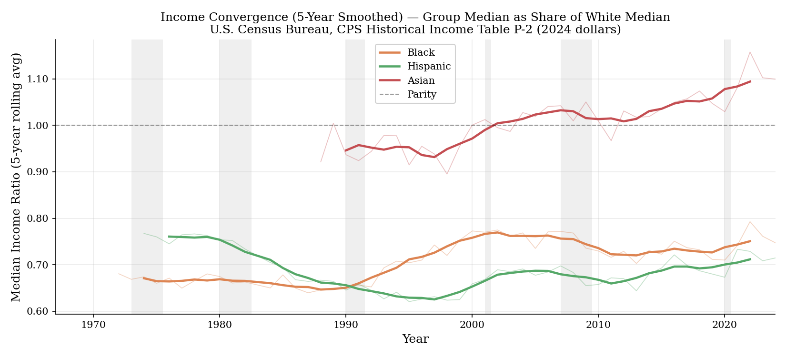
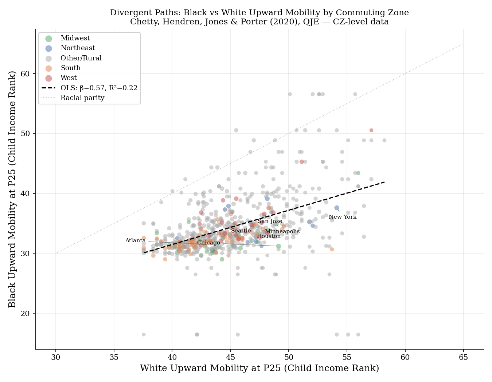
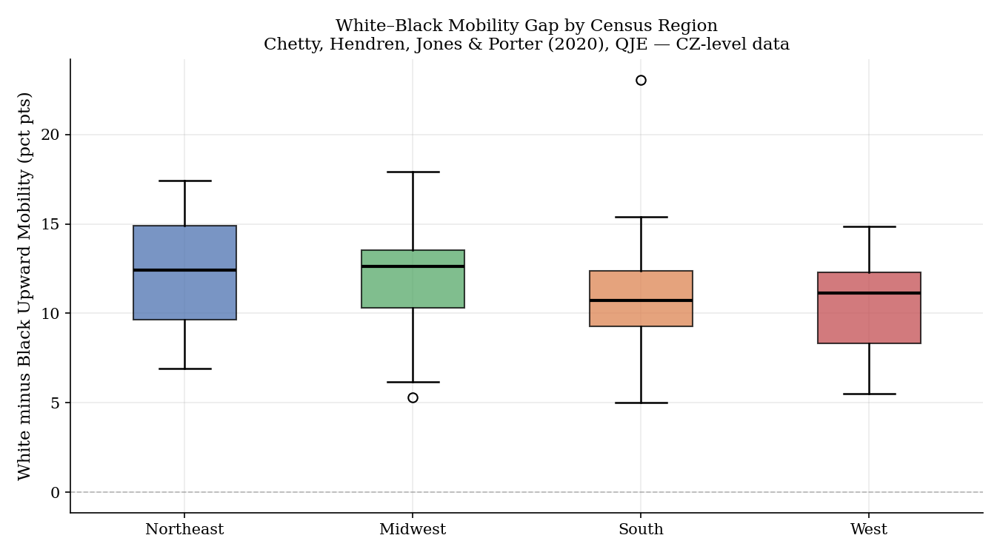
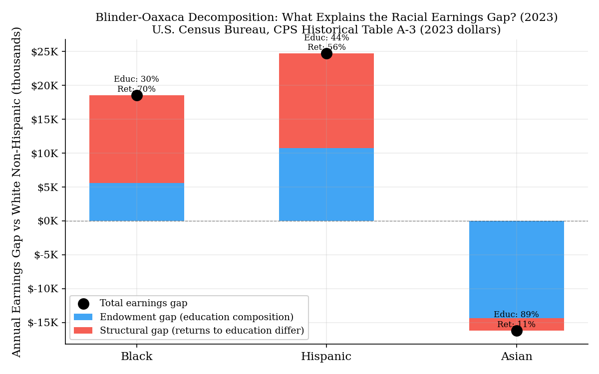
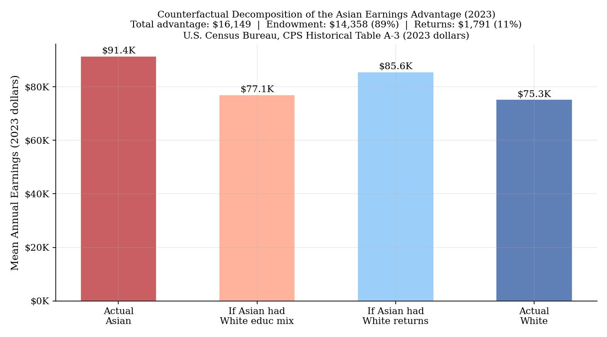

Racial and ethnic income gaps in America are one of the most studied and least resolved features of the economy. This project approaches them from four directions at once: intergenerational mobility rates by race, long-run income convergence from 1967 to 2024, geographic variation in mobility across 741 commuting zones, and a Blinder-Oaxaca decomposition of the current earnings gap. The punchline is uncomfortable. Seventy percent of the Black-White earnings gap is structural; education cannot explain it away. And the Asian earnings advantage, often cited as evidence that the system is meritocratic, is 89% a composition artifact driven by who immigrates to the U.S. in the first place.
The starting point is the rank-rank framework from Chetty, Hendren, Jones, and Porter (2020), who linked the federal income tax records of roughly 21 million children born between 1978 and 1983 to their parents' records. The idea is simple: regress the child's income percentile rank in adulthood on their parents' percentile rank. The intercept tells you the expected outcome for a child at the very bottom; the slope tells you how much parental rank predicts child rank; a slope of zero is perfect mobility, a slope of one means income reproduces itself perfectly across generations.
The rank-rank curves for the five racial groups show a consistent pattern. Asian Americans sit at the top at every parental income level, with a relatively flat slope, meaning high starting points and low persistence. Black and AIAN children run parallel to each other at the bottom, roughly 10 to 15 percentile points below the White curve at every parental income level. That gap at the bottom is the gap that cannot be attributed to parental income, because we are already conditioning on parental income.
The upward mobility statistic makes this concrete. The probability that a child born to parents in the bottom income quintile reaches the top quintile in adulthood is 25.5% for Asian children, 10.6% for White, 7.1% for Hispanic, 3.3% for AIAN, and 2.5% for Black. A Black child from a bottom-quintile family is ten times less likely to reach the top quintile than an Asian child starting from the same place.
$r_c$ is child income percentile rank in adulthood; $r_p$ is parent income percentile rank. The intercept $\alpha$ measures absolute mobility at the bottom of the income distribution. The slope $\beta$ is the intergenerational persistence coefficient — values closer to zero indicate higher mobility. Estimated separately for each racial group across birth cohorts 1978–1983.



| Racial Group | P(Q1 → Q5) | Relative to Black |
|---|---|---|
| Asian | 25.5% | 10.2× |
| White (non-Hispanic) | 10.6% | 4.2× |
| Hispanic | 7.1% | 2.8× |
| AIAN | 3.3% | 1.3× |
| Black | 2.5% | 1.0× (baseline) |
A Black child from the bottom income quintile has a 2.5% chance of reaching the top quintile. A White child from the same starting point has a 10.6% chance. This gap persists even after conditioning on parental income, meaning it is not simply a function of where families start — something else is holding Black children back at every rung of the ladder.
The intergenerational mobility data covers children born in the late 1970s and early 1980s. The longer-run picture comes from the Census Bureau's Current Population Survey, which tracks median individual income by race going back to 1967. I used this series to test whether the racial income gaps are actually closing, a question the data answers with a complicated yes and no.
Asian median income crossed above White around 2001 and has continued pulling away, reaching roughly 1.10 times White median income by 2024. Hispanic income has grown in real terms but has never exceeded 80% of White median, and that ceiling has held remarkably steady. Black median income has also grown in real terms but remains roughly 25% below White, a gap that has stubbornly resisted the convergence pressure of the past five decades.
To formalize this I ran OLS trend regressions on the ratio of each group's median income to White median income. The full-period result for Black incomes shows statistically significant convergence: a positive slope of +0.0021 per year (p < 0.001). But that masks something important. Black incomes actually diverged from White during 1967–1990 at a rate of −0.0015 per year before reversing and converging post-1990 at +0.0015 per year. The Hispanic pattern is similar in timing but with a stronger initial divergence driven by immigration composition. Asian incomes have converged strongly throughout, crossing parity around 2001.
A positive slope $\beta$ indicates convergence toward White income levels over time. Estimated separately for Black, Hispanic, and Asian groups over the full 1967–2024 period and over sub-periods to detect non-linearity.


| Group | Period | Slope (per year) | p-value | Direction |
|---|---|---|---|---|
| Black | 1967–2024 | +0.00212 | < 0.001 | Converging |
| Black | 1967–1990 | −0.00150 | 0.003 | Diverging |
| Black | 1990–2024 | +0.00146 | 0.010 | Converging |
| Hispanic | 1967–2024 | −0.00080 | 0.047 | Diverging |
| Hispanic | 1990–2024 | +0.00233 | < 0.001 | Converging |
| Asian | 1990–2024 | +0.00484 | < 0.001 | Converging |
The headline convergence number for Black incomes is real but misleading. Black incomes actually diverged from White during the first quarter of the sample before reversing. The Black-White ratio still sits around 0.75 — meaning Black median income is 75 cents per White dollar — despite more than fifty years of documented convergence pressure. At the current pace, closing the gap would take several more generations.
The national averages hide something important about where inequality actually lives. Using the Chetty et al. (2020) commuting zone data covering 741 local labor markets across the country, I looked at the relationship between White and Black upward mobility at the local level. The key outcome is child income rank at parent income percentile 25, a clean measure of how far children from lower-middle-income families climb.
One result is worth isolating: high-mobility cities for White residents are not high-mobility cities for Black residents. The OLS slope of Black mobility on White mobility across commuting zones is 0.57, well below the 1.0 you would expect if place effects were racially neutral. A 10-percentile-point increase in White upward mobility across cities is associated with only a 5.7-point increase for Black residents. The gap between the fit and the parity line actually widens as White mobility rises; the best cities for White workers tend to have the largest racial gaps.
Aggregating to Census regions, the pattern is counterintuitive. The Midwest and Northeast, regions associated with economic dynamism and higher overall opportunity, exhibit the largest White-Black mobility gaps, 11.9 and 12.3 percentile points respectively. The South, often assumed to be the most unequal, has a gap of 10.9 points. The West has the smallest at 10.4 points. This is consistent with concentrated poverty and residential segregation in Northern industrial cities generating particularly severe place-based disadvantages for Black children.


| Region | Mean Black Mobility | Mean White Mobility | Gap (pp) |
|---|---|---|---|
| West | 35.7 | 46.1 | 10.4 |
| South | 32.3 | 43.2 | 10.9 |
| Midwest | 32.2 | 44.1 | 11.9 |
| Northeast | 34.1 | 46.4 | 12.3 |
The places that do best for White children tend to have the worst relative outcomes for Black children. The Midwest and Northeast have the highest overall mobility but the largest racial gaps. Moving Black children to higher-opportunity areas would not automatically close the gap, because the racial mobility gap itself is largest in those areas.
The mobility and convergence evidence tells you how big the gap is and whether it is closing. The decomposition tells you why it exists in the first place. I applied the Blinder-Oaxaca framework to mean earnings by educational attainment from Census Table A-3, which covers workers aged 18 and over from 1975 to 2023. The decomposition splits the earnings gap between any minority group and White workers into two parts: an endowment effect (how much of the gap would close if the minority group had the White education distribution) and a structural effect (the gap that remains even after equalizing education).
For Black workers, the total current gap is $18,552 per year. Only 30% of that ($5,618) is attributable to differences in educational attainment. The remaining 70%, $12,934, is structural. It does not go away when you equalize education. Even Black workers with advanced degrees earn only 88 cents for every dollar earned by their White counterparts at the same credential level, and that ratio has been essentially flat since the 1990s.
For Hispanic workers, the absolute gap is larger at $24,702 per year, but the education share is higher at 44%, reflecting the genuine education deficit in this population, driven significantly by recent immigrant cohorts who arrive with lower credentials than the native-born average. For Asian workers, the picture flips entirely. Asian workers earn $91,400 on average versus $75,300 for White workers, a $16,149 advantage. But 89% of that advantage ($14,358) is explained by education composition alone. Asian workers are dramatically more concentrated at the top of the education distribution: 64.7% hold at least a bachelor's degree versus 45.5% for White workers. If Asian workers had the same education distribution as White workers but kept their current within-education earnings, they would earn $77,100, only $1,800 above White. The entire advantage nearly evaporates.
Within education levels, Asian workers actually show a "bamboo ladder" pattern: they earn less than White workers at the high school level (ratio 0.85), near parity at the bachelor's level (1.02), and a substantial premium at the advanced degree level (1.19). This is consistent with high immigrant selection into professional fields but a penalty for Asian workers without advanced credentials, likely reflecting foreign credentials that are not fully valued in the U.S. labor market.
$\bar{X}$ is the vector of education shares, $\hat{\beta}$ is the vector of mean earnings at each education level. The endowment effect captures how much of the gap would close if the minority group had the White education distribution. The structural effect is what remains — differential labor market returns to the same credentials.

| Group | Total Gap ($/yr) | Endowment Effect | Structural Effect |
|---|---|---|---|
| Black | −$18,552 | $5,618 (30%) | $12,934 (70%) |
| Hispanic | −$24,702 | $10,869 (44%) | $13,833 (56%) |
| Asian | +$16,149 | $14,358 (89%) | $1,791 (11%) |

Credential acquisition alone cannot close the Black-White earnings gap. Seventy percent of the gap is structural — it survives education controls. The Asian premium, often cited as proof that hard work pays off equally, is almost entirely a selection artifact: Asian immigrants who come to the U.S. are not a random sample of their home populations. They are among the most educated people on earth. Once you account for that, the structural advantage is minimal.
| Method | Application | Source Data |
|---|---|---|
| Rank-Rank Regression | Intergenerational income persistence by race; $r_c = \alpha + \beta r_p + \varepsilon$ | Opportunity Insights Tables 1–4 |
| Quintile Transition Matrices | Full conditional distribution of child quintile given parent quintile by race | Chetty et al. (2020) |
| Sigma-Convergence Testing | OLS trend regression on group/White income ratio; tests narrowing of gaps | Census CPS Table P-2, 1967–2024 |
| Geographic Mobility Analysis | Cross-CZ OLS of Black on White mobility; slope = 0.57 (below parity) | Chetty et al. (2020), 741 CZs |
| Kitagawa-Oaxaca Decomposition | Splits earnings gap into education endowment and structural (differential returns) components | Census CPS Table A-3, 2023 |
| Education Counterfactual | Asks: what would Asian earnings be if education composition matched White distribution? | Census CPS Table A-3 |
| Source | Coverage | Use |
|---|---|---|
| Opportunity Insights | Birth cohorts 1978–1983, 21M children | Intergenerational rank-rank mobility, quintile transitions, CZ-level statistics |
| Census CPS Table P-2 | 1947–2024, annual | Median individual income by race; convergence analysis |
| Census CPS Table A-3 | 1975–2023, annual | Mean earnings by education × race; Oaxaca decomposition |
| Census CPS Table A-2 | 1967–2023, annual | Education attainment shares by race; endowment construction |
The intergenerational mobility framework is built on Chetty, Hendren, Jones, and Porter (2020), which remains the most comprehensive race-stratified mobility study in the U.S. context. The Blinder-Oaxaca decomposition follows the original formulations in Blinder (1973) and Oaxaca (1973), with the standardization approach attributed to Kitagawa (1955). Geographic heterogeneity in racial mobility gaps is documented and extended from the Chetty et al. commuting zone data. Long-run convergence analysis draws on the Census Bureau CPS historical income series.